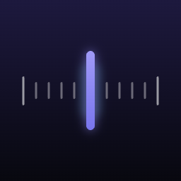

TempoRise
A practice coach for guitarists. TempoRise listens while you play and shows what improved: the notes you hit, how close to pitch, and how steady your time is. No account, nothing recorded.
Frequently asked
The tuner doesn't react.
Check that TempoRise can use the microphone in Settings. Play one string at a time, about an arm's length from the phone, in a quiet room.
The note looks an octave off.
Low strings on a phone microphone can sound mostly like their overtone. Let the string ring and play a little closer; TempoRise corrects this automatically when it can hear the fundamental.
My rhythm results seem late or early.
Every audio device adds a small delay. Use Calibrate on the Rhythm Check screen once for the speaker and once for each pair of headphones. Bluetooth headphones add more delay than wired ones.
Why is the click silent in Rhythm Check?
Through the speaker, the click would reach the microphone and be counted as your notes. The beat is shown on screen instead. Connect headphones to hear it.
How do I restore TempoRise Plus?
Open Settings and tap Restore Purchases. To change or cancel, tap Manage Subscription.
Can I share a routine?
Yes. Touch and hold the routine, choose Share… and send the file. On the other iPhone, choose New Routine › Import from File on the Practice page.
Contact
temporise.info@gmail.com — TempoRise is made by an independent developer. Feedback is always welcome.
Yardım
Akort ekranı tepki vermiyor.
Ayarlar'da TempoRise'ın mikrofonu kullanabildiğini kontrol edin. Sessiz bir odada, telefondan yaklaşık bir kol boyu uzakta, her seferinde tek tel çalın.
Nota bir oktav yanlış görünüyor.
Telefon mikrofonunda kalın teller çoğunlukla üst harmoniği gibi duyulur. Teli çınlamaya bırakın ve biraz daha yakından çalın; TempoRise temel sesi duyduğunda bunu kendiliğinden düzeltir.
Ritim sonuçlarım geç ya da erken görünüyor.
Her ses cihazı küçük bir gecikme ekler. Ritim ekranındaki "Calibrate" ile hoparlör için bir kez, her kulaklık için bir kez kalibrasyon yapın. Bluetooth kulaklıklar kablolulardan daha fazla gecikme ekler.
Ritim ölçümünde tık sesi neden duyulmuyor?
Hoparlörden gelen tık mikrofona ulaşır ve sizin notanız sayılırdı. Bu yüzden vuruş ekranda gösterilir. Duymak için kulaklık takın.
TempoRise Plus'ı nasıl geri yüklerim?
Ayarlar'da "Restore Purchases"a dokunun. Değiştirmek ya da iptal etmek için "Manage Subscription".
Bir rutini paylaşabilir miyim?
Evet. Rutine basılı tutun, Share…'ı seçip dosyayı gönderin. Diğer iPhone'da Practice sayfasında New Routine › Import from File'ı seçin.